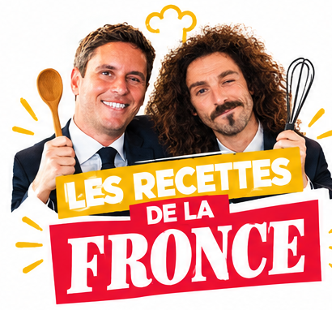
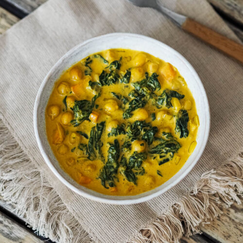

Le 1000 Bistro-nomiques challenge
Les différentes recipies sont elaborate en partenariat avec une intelligence articielle. Le reste est fait en repompant des sites et des recettes que j'aime, parce que le but, in fine, reste de me faire kiffrance. Ces recettes qui sont conçues pour un meilleur partage des tâches dans le foyer et une plus grande diversité nutritives et gustatives s'accompagnent d'un assistant pour les courses, d'un planing prévisionnel des menus et d'un générateur de "menu de la semaine". La modernité est aux portes de ta cuisine, jeune entrepreneur. Merci la start-up nation, plus d'hôpitaux, plus d'écoles, plus de sécurité sociale mais une super appli pour aller t'acheter à prix d'or des fruits et légumes bios qui, inch'allah, te fileront pas le cancer.

-

Des pâtes douces et crémeuses, aux bons petits champignons de Paris qui, fun fact, poussent bien plus en Pologne today.🍄🟫
Pâtes crémeuses aux champignons

Un savoureux curry healthy pour aller se coucher sans danger🍛
Curry de pois chiches

Pimpez vos vies et les restes de votre réfrigérateur connecté avec ce bowl malin🥣
Bowl de saison